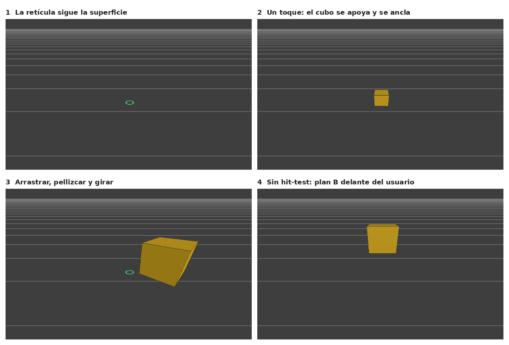

Al terminar la Sesión 38 el cubo estaba en (0, −0.2, −1.5): un punto elegido por nosotros. El sistema sabía dónde estaba el teléfono, pero nadie le había preguntado dónde hay un piso o una mesa.
Portada
Electiva · PWA — Sub-bloque B · Proyecto Módulo AR · Sesión 13 de 19
Realidad aumentada con WebXR (2/2)
Ayer el cubo flotaba a metro y medio. Hoy se apoya: el Atlas le pregunta al sistema dónde hay una superficie real, muestra un anillo que la sigue, coloca el cubo con un toque, lo ancla y deja que lo muevas, gires y agrandes con los dedos. Y cada pieza tiene su plan B.
AsignaturaElectiva - PWA
Sesión13 de 19 · Proyecto Módulo AR
InstituciónUPTC
SESIÓN 13
Del cubo flotante al cubo apoyado
El sistema encuentra una superficie, una retícula la muestra, un toque coloca el cubo, un ancla lo sostiene y los dedos lo mueven. Con un plan B para cada función que falte.
Hit-test y anclasGestos con los dedosIWER y sala sintética
Antes de empezar
Objetivos de aprendizaje
- Explicar qué agregan el hit-test y las anclas a una sesión AR.
- Pedir funciones opcionales y averiguar cuáles concedió el navegador, con un plan B para cada una.
- Buscar superficies con un
XRHitTestSourcey colocar el objeto con un toque (select). - Anclar el objeto con un
XRAnchory limpiar las anclas viejas al recolocar. - Implementar gestos (mover, girar, escalar) sin confundir un arrastre con «tocar para colocar».
- Probar con IWER y una sala sintética, y saber qué solo comprueba un teléfono.
.zip
Recursos: pwa-ar-objetos3d-sesion38.zip
CHECKPOINT · CIERRE DE LA SESIÓN 38 · PUNTO DE PARTIDA
El Atlas con la sesión AR de la sesión anterior. No tiene retícula, colocación ni gestos.
.zip
Recursos: pwa-ar-objetos3d-sesion39.zip
VERSIÓN TERMINADA DE ESTA SESIÓN
Agrega gestos.ts, hit-test, anclas y plan B. Intenta construirlo tú primero.
Punto de partida · 1.1
De «flotando» a «apoyado en la mesa»
| Pregunta | Pieza de WebXR | Qué devuelve |
|---|---|---|
| ¿Qué superficie hay en esa dirección? | Hit-test: XRHitTestSource | Impactos con una pose sobre la superficie |
| ¿Cómo hago que se quede ahí? | Anchors: createAnchor() | Un punto del mundo real que el sistema sigue corrigiendo |
| ¿Cómo sé que quiere colocarlo? | Evento select | Un toque, con el XRFrame de ese instante |
Punto de partida · 1.2
La idea del rayo, y la lección de siempre
Un hit-test lanza una recta desde un origen en una dirección y dice dónde choca con una superficie que el sistema conoce. Hoy el origen es el propio teléfono, apuntando hacia donde mira la cámara.
Ninguna de estas funciones está garantizada. Un teléfono puede abrir una sesión AR y no ofrecer hit-test; otro puede ofrecer hit-test y no anclas. La app tiene que seguir siendo útil en cada combinación.
1
Mejora progresiva
La misma lógica de todo el curso: ofrecer lo mejor donde existe y seguir funcionando donde no.
2
Pedir ≠ recibir
Lo que tiene plan B se pide como opcional y se comprueba después. hit-test se pide como requerida (lección del teléfono) y, si no existe, se reintenta como opcional.
Funciones opcionales · 2.1
Pedir hit-test (con reintento) y anchors
Primero hit-test requerida; si el dispositivo responde NotSupportedError, se reintenta con todo opcional y se usa el plan B.
src/xr.ts (pedir la sesión)
/**
* Pide la sesión AR. DEBE llamarse desde el manejador de un clic: sin gesto del
* usuario, el navegador la rechaza con SecurityError.
*
* Primer intento: `hit-test` como función REQUERIDA. Con ella opcional, Chrome en Android
* concedía la función y creaba la fuente, pero nunca entregaba una superficie; como requerida,
* el anillo sale. Si el dispositivo no la ofrece (NotSupportedError), se reintenta con todo
* opcional: la sesión se abre igual y la app usa su plan B.
*/
export async function pedirSesionAR(overlay: HTMLElement | null): Promise<XRSession> {
const abrir = (requeridas: string[], opcionales: string[]) => {
const opciones: XRSessionInit & { domOverlay?: { root: Element } } = {
requiredFeatures: requeridas, // «local»: el origen (0,0,0) es donde está el usuario al empezar
optionalFeatures: opcionales,
};
if (overlay) opciones.domOverlay = { root: overlay };
return navigator.xr!.requestSession("immersive-ar", opciones);
};
try {
return await abrir(["local", "hit-test"], ["dom-overlay", "anchors"]);
} catch (error) {
if ((error as DOMException).name !== "NotSupportedError") throw error;
return abrir(["local"], ["dom-overlay", "hit-test", "anchors"]);
}
}Funciones opcionales · 2.2
Pedir no es recibir: enabledFeatures
src/xr.ts (capacidadesDe)
/**
* Pedir una función no garantiza recibirla. `enabledFeatures` lista las concedidas;
* si el navegador aún no la ofrece, se mira si existen las funciones de la API.
*/
export function capacidadesDe(sesion: XRSession): CapacidadesAR {
const concedidas = (sesion as XRSession & { enabledFeatures?: string[] }).enabledFeatures;
const tiene = (nombre: string, respaldo: boolean) => (Array.isArray(concedidas) ? concedidas.includes(nombre) : respaldo);
return {
overlay: Boolean(sesion.domOverlayState),
hitTest: tiene("hit-test", typeof sesion.requestHitTestSource === "function"),
anclas: tiene("anchors", typeof XRFrame !== "undefined" && "createAnchor" in XRFrame.prototype),
};
}enabledFeatures lista lo concedido. Si el navegador aún no lo expone, se mira si existen las funciones de la API. Resultado: tres booleanos que consulta toda la app.Funciones opcionales · 2.3
El plan B de cada ausencia
| Falta… | Qué hace la app | Qué pierde el usuario |
|---|---|---|
anchors | Coloca igual; el objeto queda fijo en el espacio local. | Puede «derivar» con el tiempo. |
hit-test | Sin retícula: el cubo va a 1,5 m delante de la mirada; un toque lo trae de nuevo. | Apoyarse en una superficie real. |
dom-overlay | Se coloca con un toque, sin botón «Salir» ni gestos. | Mover, girar, escalar. |
| Las tres | Es la Sesión 38: un cubo flotando. | La app sigue abriendo AR. |
Tras abrir la sesión, la línea de estado enumera lo que no se concedió: el usuario nunca se queda preguntándose por qué «no pasa nada».
Dos niveles · 3.1
Quién manda sobre qué
Dos jefes: el sistema decide dónde está el punto de apoyo; el usuario, qué hace el cubo respecto a él. Si escribieran en el mismo objeto, el ancla desharía cada arrastre.
src/visor.ts (dos niveles)
// Dos niveles: `raiz` sigue a la superficie o al ancla (lo manda el sistema);
// `grupo` es el objeto con lo que decide el usuario (mover, girar, escalar).
const raiz = new THREE.Group();
const grupo = new THREE.Group();
const cubo = new THREE.Mesh(
new THREE.BoxGeometry(1.6, 1.6, 1.6),
new THREE.MeshStandardMaterial({ color: 0xffcc29, roughness: 0.45 })
);
const aristas = new THREE.LineSegments(
new THREE.EdgesGeometry(cubo.geometry),
new THREE.LineBasicMaterial({ color: 0x0b1220 })
);
grupo.add(cubo, aristas);
raiz.add(grupo);
escena.add(raiz);Dos niveles · 3.2
raiz y grupo
R
raiz: el punto de apoyo
Su matriz viene entera del sistema: de la retícula al colocar y, después, del ancla. Por eso en AR se apaga matrixAutoUpdate: se le da la matriz hecha con matrix.fromArray(...).
G
grupo: el cubo
Hijo de raiz. Su position, rotation.y y scale son locales: el usuario los cambia con los dedos y siguen valiendo aunque el ancla se corrija.
La base, no el centro. El cubo mide 1,6 y su origen está en el centro: sobre una superficie en y = 0 quedaría medio hundido. Por eso su y local es
MITAD × escala (0,8 × 0,25 = 0,2 m), y se recalcula al cambiar la escala.Dos niveles · 3.3
Estado de la colocación (1/2)
src/visor.ts (estado, 1/2)
// ── Estado de la colocación ──
let fase: FaseAR = caps.hitTest ? "buscando" : "colocado";
let ancla: XRAnchor | null = null;
let escala = ESCALA_INICIAL;
let consultas = 0;
let resultados = 0;
let impactosVistos = 0;
let sinSuperficie = false;
let ultimaPose = performance.now(); // cuándo fue la última vez que el hit-test encontró algo
let ultimoImpacto: XRRigidTransform | null = null; // pose de la superficie bajo el centro de la pantallafase es una pequeña máquina de estados: buscando → listo → colocado. Los contadores consultas, resultados y impactosVistos son diagnóstico; sinSuperficie activa el plan B por tiempo.Dos niveles · 3.3b
estado(): lo que ve la interfaz
src/visor.ts (estado, 2/2)
const estado = (): EstadoAR => {
raiz.updateMatrixWorld(true);
const p = grupo.getWorldPosition(new THREE.Vector3());
return {
...caps,
fase,
anclado: ancla !== null,
escala,
giroGrados: ((aGrados(grupo.rotation.y) % 360) + 360) % 360,
posicion: { x: p.x, y: p.y, z: p.z },
consultas,
resultados,
impactos: impactosVistos,
sinSuperficie,
};
};
const avisar = () => opciones.alCambiar(estado());
// `raiz` deja de calcular su matriz sola: se la damos nosotros desde la superficie o el ancla.
raiz.matrixAutoUpdate = false;
grupo.position.set(0, MITAD * escala, 0); // la base apoya en la superficie
grupo.scale.setScalar(escala);
grupo.rotation.set(0, 0, 0);Retícula · 4.1
Un rayo desde el centro de la pantalla
El espacio viewer tiene su origen en el teléfono y «adelante» hacia donde mira la cámara: un rayo desde él sale del centro de la pantalla.
src/visor.ts (fuente de hit-test)
// ── Hit-test: un rayo desde el centro de la pantalla («viewer») ──
let fuente: XRHitTestSource | null = null;
if (caps.hitTest) {
try {
const espacioViewer = await sesion.requestReferenceSpace("viewer");
try {
// «plane» exige que el sistema haya reconocido un plano (tarda y falla en superficies lisas);
// «point» acepta también puntos de característica sueltos: el anillo sale casi de inmediato.
fuente = (await sesion.requestHitTestSource?.({ space: espacioViewer, entityTypes: ["plane", "point"] })) ?? null;
} catch {
fuente = (await sesion.requestHitTestSource?.({ space: espacioViewer })) ?? null; // el navegador no admite «point»
}
} catch {
fuente = null;
}
if (!fuente) {
caps.hitTest = false; // lo concedió pero no funciona: plan B
fase = "colocado";
raiz.visible = true;
raiz.matrix.makeTranslation(0, -0.5, -1.5);
}
}requestHitTestSource puede fallar aunque enabledFeatures diga que existe: el try/catch lo convierte en «sin hit-test» y activa el plan B.Retícula · 4.2
La retícula: un anillo acostado
src/visor.ts (retícula)
// Retícula: un anillo verde que se pega a la superficie que el hit-test encuentra.
const reticula = new THREE.Mesh(
new THREE.RingGeometry(0.1, 0.13, 40).rotateX(-Math.PI / 2), // acostado: su cara mira hacia arriba
new THREE.MeshBasicMaterial({ color: 0x4ade80 })
);
reticula.matrixAutoUpdate = false; // su matriz viene entera del hit-test
reticula.visible = false;
escena.add(reticula);RingGeometry nace de pie (plano XY), pero la pose del hit-test usa el eje Y como la normal de la superficie: un piso tiene la normal hacia arriba. De ahí rotateX(−π/2). Su matriz se la damos entera.Retícula · 4.3
Cada fotograma: preguntar y mover el anillo
src/visor.ts (bucle XR, 1/2)
renderer.setAnimationLoop((_t, frame) => {
const referencia = renderer.xr.getReferenceSpace();
if (frame && referencia) {
if (fuente && cuadro++ % CADA_CUANTOS_FOTOGRAMAS === 0) {
const impactos = frame.getHitTestResults(fuente);
const pose = impactos.length ? impactos[0].getPose(referencia) : null;
consultas++;
if (impactos.length) resultados++;
if (pose) impactosVistos++;
if (consultas % 30 === 0) avisar(); // refresca el diagnóstico (el overlay lo limita a 5 veces por segundo)
if (pose) {
sinImpacto = 0;
sinSuperficie = false;
ultimaPose = performance.now();
reticula.visible = true;
reticula.matrix.fromArray(pose.transform.matrix);
ultimoImpacto = pose.transform;
if (fase === "buscando") {
fase = "listo";
avisar();
}
} else if (++sinImpacto >= CONSULTAS_SIN_IMPACTO) {
// Una superficie que aparece y desaparece cada fotograma haría parpadear el texto del overlay.
reticula.visible = false;
ultimoImpacto = null;getHitTestResults da los impactos de cerca a lejos; getPose(referencia) los lleva al espacio local; pose.transform.matrix son los 16 números para fromArray.Retícula · 4.3b
Sin impactos, el anillo se oculta... con paciencia
src/visor.ts (bucle XR, 2/2)
if (fase === "listo") {
fase = "buscando";
avisar();
}
}
if (!pose && fase === "buscando" && !sinSuperficie && performance.now() - ultimaPose > MS_HASTA_PLAN_B) {
sinSuperficie = true; // el texto de ayuda cambia y el toque ya coloca
avisar();
}
}
// Con ancla, la posición de `raiz` la corrige el sistema fotograma a fotograma.
if (ancla && frame.trackedAnchors?.has(ancla)) {
const poseAncla = frame.getPose(ancla.anchorSpace, referencia);
if (poseAncla) raiz.matrix.fromArray(poseAncla.transform.matrix);
}
}
renderer.render(escena, camara);
});La retícula solo se oculta tras
CONSULTAS_SIN_IMPACTO consultas seguidas sin superficie (histéresis), y el hit-test se consulta un fotograma de cada dos: menos trabajo y sin parpadeos. La parte del ancla va en 6.Retícula · 4.4
Tres fases, tres mensajes
1
Buscando
No hay superficie: «Mueve el teléfono despacio hasta ver el anillo verde.» Solo se ve el anillo, y a veces ni eso.
2
Listo
Hay superficie: «Toca la pantalla para colocar el cubo.» El cubo aún no existe: raiz está oculta.
3
Colocado
El cubo está en su sitio: «Arrastra, gira con dos dedos, pellizca. Toca otro punto para recolocarlo.»
Colocar · 5.1
Un toque llega como select
En una sesión XR el toque no es un evento de un elemento HTML: es el evento select de la sesión, y trae el XRFrame de ese instante, el único momento en que se pueden crear anclas.
- No se coloca en el aire. Con hit-test pero sin impacto en este instante, el toque se ignora.
- Recolocar es volver a tocar. Mueve
raiza la retícula y recentra el cubo; la escala y el giro se conservan. - Plan B sin hit-test. Se toma la dirección de la mirada (
setY(0): sin inclinación), se avanza 1,5 m y se baja 0,5 m.
Colocar · 5.2
colocar(): dónde va el cubo
src/visor.ts (colocar, 1/2)
let turno = 0; // numera los toques: si llegan dos seguidos, solo vale el último
async function colocar(frame: XRFrame) {
const referencia = renderer.xr.getReferenceSpace();
if (!referencia) return;
const mio = ++turno;
let impacto: XRRigidTransform | null = null;
const hayImpacto = fuente !== null && reticula.visible && ultimoImpacto !== null;
if (fuente && !hayImpacto && !sinSuperficie) return; // no hay superficie: no se coloca en el aire (todavía)
if (hayImpacto) {
impacto = ultimoImpacto;
raiz.matrix.copy(reticula.matrix); // el cubo aparece donde está la retícula
} else {
// Plan B (sin hit-test, o sin superficie tras varios segundos): delante de la mirada actual, a 1,5 m.
const posicion = new THREE.Vector3().setFromMatrixPosition(camara.matrixWorld);
const delante = camara.getWorldDirection(new THREE.Vector3()).setY(0).normalize();
posicion.addScaledVector(delante, 1.5);
posicion.y -= 0.5;
raiz.matrix.makeTranslation(posicion.x, posicion.y, posicion.z);Colocar · 5.3
colocar(): el ancla y el turno
src/visor.ts (colocar, 2/2)
}
grupo.position.set(0, MITAD * escala, 0); // vuelve al centro de la nueva posición
raiz.visible = true;
fase = "colocado";
// ── Ancla: el sistema recuerda ESE punto del mundo real y lo sigue corrigiendo ──
ancla?.delete(); // al volver a colocar, la ancla anterior ya no sirve
ancla = null;
avisar();
if (impacto && caps.anclas) {
try {
const nueva = await frame.createAnchor!(impacto, referencia);
if (mio !== turno || !sesionAR) nueva.delete(); // llegó tarde: otro toque o la sesión ya terminó
else ancla = nueva;
} catch {
ancla = null; // el navegador rechazó anclar: el objeto queda fijo en el espacio «local»
}
avisar();
}
}Cada toque toma un turno. Si una ancla tarda y llega después de otro toque, se borra en vez de adoptarse.
Colocar · 5.4
select, con la guarda de los gestos
src/visor.ts (select)
sesion.addEventListener("select", (ev) => {
if (gestos.huboGesto()) return; // un arrastre no cuenta como «tocar para colocar»
void colocar((ev as XRInputSourceEvent).frame);
});Soltar un arrastre también genera
select: sin huboGesto() el cubo se recolocaría justo después de moverlo.Anclas · 6.1
Que el cubo se quede donde lo pusiste
Una pose del hit-test es una foto de la superficie, en coordenadas del espacio local. Pero el seguimiento no es perfecto: al caminar por la habitación, ARCore refina su mapa y puede «reubicar» el mundo unos centímetros.
Con coordenadas fijas, el cubo parecería deslizarse respecto a la mesa. Un ancla le pide al sistema que recuerde ese punto del mundo real, no esas coordenadas: en cada fotograma, su pose es la mejor estimación actual de dónde está.
1
Crearla
En el toque: frame.createAnchor(impacto, referencia). Devuelve una promesa.
2
Seguirla
En el bucle: si trackedAnchors la contiene, su pose va a raiz.matrix. Si se pierde, el cubo se queda donde estaba.
3
Borrarla
ancla.delete() al recolocar y al terminar la sesión: un ancla viva le cuesta trabajo al sistema.
Anclas · 6.2
La carrera de los dos toques
createAnchor es asíncrona. Si el usuario toca dos veces seguidas, la segunda ancla puede resolverse antes. Al llegar tarde, la primera pisaría a la segunda y el cubo seguiría el punto equivocado.src/visor.ts (el turno)
const mio = ++turno;
...
const nueva = await frame.createAnchor!(impacto, referencia);
if (mio !== turno || !sesionAR) nueva.delete(); // llegó tarde
else ancla = nueva;Este tipo de error no aparece al probar despacio con un dedo: aparece con usuarios reales. Y si createAnchor se rechaza, el cubo queda colocado pero no anclado (anclado: no).
Anclas · 6.3
Al terminar la sesión, todo se libera
src/visor.ts (fin de sesión)
sesion.addEventListener(
"end",
() => {
renderer.setAnimationLoop(null);
renderer.xr.enabled = false;
sesionAR = null;
gestos.destruir();
fuente?.cancel();
ancla?.delete();
escena.remove(reticula);
reticula.geometry.dispose();
(reticula.material as THREE.Material).dispose();
escena.background = fondoPrevio;
controles.enabled = !porSensores;
raiz.matrixAutoUpdate = true;
raiz.matrix.identity();
raiz.visible = true;
grupo.position.set(0, 0, 0);
grupo.scale.set(1, 1, 1);
grupo.rotation.set(0, 0, 0);
ajustarTamano(); // el visor XR cambió el tamaño del canvas
bucle(); // vuelve el requestAnimationFrame normal
opciones.alTerminar();
},
{ once: true }
);Gestos · 7.1
Del dedo a la intención
Los dedos sobre el overlay DOM llegan como Pointer Events normales. gestos.ts los traduce a tres intenciones:
| Qué hace el usuario | Intención | Cómo se calcula |
|---|---|---|
| Un dedo se arrastra | Mover | Posición del dedo, tras superar 10 px |
| Dos dedos se separan o juntan | Escalar | Distancia actual ÷ anterior |
| Dos dedos giran entre sí | Girar | Cambio del ángulo de la recta que los une (atan2) |
Gestos · 7.2
gestos.ts: bajar el dedo
src/gestos.ts (1/3)
const UMBRAL_ARRASTRE_PX = 10; // por debajo de esto es un toque, no un arrastre
export function crearGestos(el: HTMLElement, acciones: AccionesGestos): Gestos {
const dedos = new Map<number, { x: number; y: number }>();
let inicio = { x: 0, y: 0 };
let arrastrando = false;
let hubo = false;
let distanciaPrev = 0;
let anguloPrev = 0;
const medida = () => {
const [a, b] = [...dedos.values()];
return { distancia: Math.hypot(b.x - a.x, b.y - a.y), angulo: Math.atan2(b.y - a.y, b.x - a.x) };
};
function alBajar(e: PointerEvent) {
// Los botones del overlay (como «Salir de AR») no inician gestos.
if ((e.target as HTMLElement).closest("button")) return;
if (dedos.size === 0) {
hubo = false;
arrastrando = false;
inicio = { x: e.clientX, y: e.clientY };
}
dedos.set(e.pointerId, { x: e.clientX, y: e.clientY });
if (dedos.size === 2) {
const m = medida();
distanciaPrev = m.distancia;
anguloPrev = m.angulo;
hubo = true; // con dos dedos nunca es un toque
}Gestos · 7.3
gestos.ts: mover el dedo
src/gestos.ts (2/3)
}
function alMoverDedo(e: PointerEvent) {
const dedo = dedos.get(e.pointerId);
if (!dedo) return;
dedo.x = e.clientX;
dedo.y = e.clientY;
if (dedos.size === 1) {
if (!arrastrando && Math.hypot(e.clientX - inicio.x, e.clientY - inicio.y) < UMBRAL_ARRASTRE_PX) return;
const primero = !arrastrando;
arrastrando = true;
hubo = true;
acciones.alMover(e.clientX, e.clientY, primero);
} else if (dedos.size === 2) {
const m = medida();
if (distanciaPrev > 0) acciones.alEscalar(m.distancia / distanciaPrev);
let d = m.angulo - anguloPrev;
if (d > Math.PI) d -= 2 * Math.PI; // el ángulo da la vuelta en ±180°: se normaliza
if (d < -Math.PI) d += 2 * Math.PI;
acciones.alGirar(d);
distanciaPrev = m.distancia;
anguloPrev = m.angulo;
}
}
Gestos · 7.4
gestos.ts: soltar y devolver
src/gestos.ts (3/3)
function alSubir(e: PointerEvent) {
dedos.delete(e.pointerId);
if (dedos.size === 0) arrastrando = false;
}
el.addEventListener("pointerdown", alBajar);
el.addEventListener("pointermove", alMoverDedo);
el.addEventListener("pointerup", alSubir);
el.addEventListener("pointercancel", alSubir);
return {
huboGesto: () => hubo,
destruir() {
el.removeEventListener("pointerdown", alBajar);
el.removeEventListener("pointermove", alMoverDedo);
el.removeEventListener("pointerup", alSubir);
el.removeEventListener("pointercancel", alSubir);
dedos.clear();
},
};
}Gestos · 7.5
Tres decisiones que vale la pena releer
1
El umbral
Un dedo nunca está quieto: un «toque» tiene microdesplazamientos. Bajo 10 px se descartan; sobre 10 px, el toque pasa a ser arrastre.
2
huboGesto()
Soltar un arrastre también genera select. La bandera sube al pasar el umbral (o con un segundo dedo) y baja al apoyar un dedo nuevo.
3
Botones fuera
Si el pointerdown cae sobre un <button> (p. ej. «Salir de AR»), no inicia gestos.
Gestos · 7.6
Mover: de un punto de pantalla a un punto de la superficie
- Posición del dedo → coordenadas normalizadas (−1 a 1, con Y hacia arriba).
- Three.js construye el rayo de la cámara por ese punto (
setFromCamera). - El plano de la superficie pasa por el origen de
raiz, con su eje Y como normal. intersectPlaneda dónde el rayo corta el plano; si no lo corta (miras al cielo), no se mueve nada.raiz.worldToLocallo expresa respecto araiz; solo cambian x y z, la altura no.- El
desfasedel primer movimiento evita que el cubo «salte» a quedar centrado bajo el dedo.
Gestos · 7.7
mover(), girar y escalar en visor.ts
src/visor.ts (gestos)
const rayo = new THREE.Raycaster();
const plano = new THREE.Plane();
const desfase = new THREE.Vector2();
const tmp = new THREE.Vector3();
function mover(clientX: number, clientY: number, primero: boolean) {
if (fase !== "colocado") return;
// Pantalla → rayo → punto donde ese rayo corta el plano de la superficie.
rayo.setFromCamera(new THREE.Vector2((clientX / window.innerWidth) * 2 - 1, -(clientY / window.innerHeight) * 2 + 1), camara);
raiz.updateMatrixWorld(true);
const normal = new THREE.Vector3(0, 1, 0).transformDirection(raiz.matrixWorld);
plano.setFromNormalAndCoplanarPoint(normal, tmp.setFromMatrixPosition(raiz.matrixWorld));
const punto = rayo.ray.intersectPlane(plano, new THREE.Vector3());
if (!punto) return; // el rayo no baja hasta el plano (miras al cielo)
const local = raiz.worldToLocal(punto);
// En el primer movimiento se recuerda a cuánto del centro del objeto tocó el dedo, para que no salte.
if (primero) desfase.set(grupo.position.x - local.x, grupo.position.z - local.z);
grupo.position.x = local.x + desfase.x;
grupo.position.z = local.z + desfase.y;
avisar();
}
const gestos = crearGestos(opciones.overlay, {
alMover: mover,
alGirar(rad) {
if (fase !== "colocado") return;
grupo.rotation.y += rad;
avisar();
},
alEscalar(factor) {
if (fase !== "colocado") return;
escala = Math.min(ESCALA_MAX, Math.max(ESCALA_MIN, escala * factor));
grupo.scale.setScalar(escala);
grupo.position.y = MITAD * escala; // la base sigue apoyada
avisar();
},
});Gestos · 7.8
El botón no es la escena
El navegador también convierte en select un toque sobre un botón del overlay: «Salir de AR» saldría de la sesión, pero también intentaría colocar el cubo. Antes del select emite beforexrselect sobre el elemento tocado; cancelarlo avisa de que ese toque es del botón.
src/main.ts
// Un toque sobre un botón del overlay NO debe contar como «tocar para colocar»:
// el navegador avisa con `beforexrselect` y basta cancelarlo.
btnSalirAR.addEventListener("beforexrselect", (e) => e.preventDefault());touch-action: none en el CSS del overlay evita que el navegador interprete el arrastre como scroll o el pellizco como zoom. Los gestos dependen de dom-overlay: sin él solo se puede colocar con un toque, y la app lo dice en pantalla.Gestos · 7.9
Lección de rendimiento: cada trabajo extra se paga por fotograma
En un teléfono real, la primera versión tardaba en mostrar el anillo y Chrome llegó a cerrar la pestaña («¡Oh, no!»). Dos hábitos costosos: escribir en el overlay HTML en cada cambio (cada escritura obliga a redibujarlo sobre la cámara) y consultar el hit-test en cada fotograma.
src/main.ts (overlay con calma)
// Cada cambio del texto del overlay obliga al navegador a volver a dibujarlo
// encima de la cámara, y eso cuesta. Por eso: (1) solo se escribe si el texto
// cambió y (2) como máximo cada 200 ms (los gestos avisan decenas de veces por segundo).
const INTERVALO_OVERLAY_MS = 200;
let ultimoPintado = 0;
let pendienteAR: EstadoAR | null = null;
let temporizadorAR = 0;Overlay: se escribe solo si el texto cambió y como máximo cada 200 ms.
Hit-test: uno de cada dos fotogramas (
CADA_CUANTOS_FOTOGRAMAS); la retícula se oculta tras 8 consultas seguidas sin superficie, para que no parpadee.IWER · 8.1
Una sala sintética: un suelo de 6 × 6 m
@iwer/sem carga planos con etiquetas (suelo, mesa, pared) y responde a los hit-tests lanzando rayos contra ellos.
test_s39.js (la sala)
// Sala sintética: UN suelo de 6 × 6 m en y = 0. En las capturas de Meta el «frente» del plano es su -Y local: media vuelta sobre X (1,0,0,0) lo deja mirando hacia arriba.
const SALA = JSON.stringify({ type: 'scene', version: 1, spatialEntities: [{
uuid: '11111111-0000-4000-8000-000000000001', semanticLabel_META: 'FLOOR',
locatable_META: { orientation: { x: 1, y: 0, z: 0, w: 0 }, position: { x: 0, y: 0, z: 0 } },
bounded2D_META: { offset: { x: -3, y: -3 }, extent: { width: 6, height: 6 } } }] });IWER · 8.2
Tres detalles que costó descubrir
1
Orientación del plano
En las capturas de Meta el «frente» de un plano es su −Y local. Un suelo hacia arriba necesita media vuelta sobre X: (1, 0, 0, 0). Con un cuarto de vuelta queda vertical y la retícula sale a 0 m.
2
El origen es la cabeza
El visor emulado está a 1,6 m: el suelo queda en y = −1,6 en el espacio local, y el cubo sobre él, en −1,4.
3
Hay que mirar abajo
Con la cabeza recta el rayo es horizontal y nunca toca el suelo. La prueba inclina 0,6 rad (≈ 34°): corta a 1,6 ÷ tan(0,6) ≈ 2,34 m.
IWER · 8.3
El arnés: tocar, dedos y contador de anclas
test_s39.js (arnés)
// Instala el visor simulado y, si `conSala`, la sala. La cabeza empieza a 1,6 m de altura, mirando 34° hacia abajo.
const instalar = (conSala, extra = '') => IWER + SEM + `
;(() => {
const dev = new IWER.XRDevice(IWER.metaQuest3);
dev.installRuntime({ forceInstall: true });
${conSala ? `dev.installSEM(IWER_SEM.SyntheticEnvironmentModule); dev.sem.loadEnvironment(${SALA});` : ''}
window.__dev = dev;
window.__mirar = (alturaX, y, cabeceo) => { dev.position.set(alturaX, y, 0); dev.quaternion.set(Math.sin(-cabeceo / 2), 0, 0, Math.cos(cabeceo / 2)); };
window.__mirar(0, 1.6, 0.6);
window.__cuenta = { crearAncla: 0, borrarAncla: 0 };
{ const c0 = XRFrame.prototype.createAnchor; XRFrame.prototype.createAnchor = function (...a) { window.__cuenta.crearAncla++; return c0.apply(this, a).then((anc) => { const d0 = anc.delete.bind(anc); anc.delete = () => { window.__cuenta.borrarAncla++; return d0(); }; return anc; }); }; }
const rs = navigator.xr.requestSession.bind(navigator.xr);
navigator.xr.requestSession = async (modo, op) => { window.__peticion = J(op); const s = await rs(modo, op); window.__ses = s; return s; };
function J(x) { return JSON.stringify(x); }
// Tocar la pantalla en AR = «select» del control; los dedos sobre el overlay son Pointer Events.
window.__tocar = async () => { const c = dev.controllers.right; c.updateButtonValue('trigger', 1); await new Promise(r => setTimeout(r, 100)); c.updateButtonValue('trigger', 0); await new Promise(r => setTimeout(r, 150)); };
window.__dedo = (tipo, id, x, y) => document.querySelector('#xr-overlay').dispatchEvent(new PointerEvent(tipo, { pointerId: id, clientX: x, clientY: y, bubbles: true }));
${extra}
})();`;__tocar() pulsa y suelta el gatillo del control (un select); __dedo() fabrica un PointerEvent sobre el overlay; el contador cuenta anclas creadas y borradas.IWER · 8.4
Compilación real
Terminal
$ npm run build
✓ 18 modules transformed.
dist/index.html 2.73 kB │ gzip: 1.09 kB
dist/assets/index-BKndAtWK.css 4.00 kB │ gzip: 1.25 kB
dist/assets/workbox-window.prod.es5-BqEJf4Xk.js 5.71 kB │ gzip: 2.34 kB
dist/assets/index-CyNS8abR.js 516.92 kB │ gzip: 132.98 kB
✓ built in 1.77s
PWA v1.3.0
✓ 89 modules transformed.
dist/sw.mjs 27.27 kB │ gzip: 9.03 kB
✓ built in 462ms
PWA v1.3.0
mode injectManifest
format: es
precache 8 entries (527.14 KiB)Precaché: 518,70 → 527,14 KiB, siempre 8 entradas. Paquete principal: 508,47 → 516,92 kB. Service Worker: 27,27 kB, sin cambios.
IWER · 8.5
Salida literal: escenario A
Terminal
$ node test_s39.js
A1) petición → {"requiredFeatures":["local","hit-test"],"optionalFeatures":["dom-overlay","anchors"],"domOverlay":{"root":{}}}
A1) estado general → Sesión de realidad aumentada activa. El navegador no concedió: dom-overlay.
A2) mirando al suelo → Toca la pantalla para colocar el cubo. | {hitTest:sí,anclas:sí,anclado:no,fase:listo,escala:0.25,giro:0,pos:—}
A3) tras tocar → Cubo colocado. Toca otro punto para recolocarlo. | {hitTest:sí,anclas:sí,anclado:sí,fase:colocado,escala:0.25,giro:0,pos:[0,-1.4,-2.34]} | anclas creadas/borradas: {"crearAncla":1,"borrarAncla":0}
A4) el usuario camina 1 m a la derecha → pos del cubo: [0,-1.4,-2.34] (sigue en su sitio: true )IWER · 8.6
Salida literal: escenarios B, C, D y E
Terminal
B1) movimiento de 4 px (menor que el umbral) → pos igual: true
B2) arrastrar 200 px a la derecha → pos: [0,-1.4,-2.34] → [0.63,-1.4,-2.34] | x aumentó: true | y igual: true
B3) «select» justo después de un arrastre → NO recoloca: anclas {"crearAncla":1,"borrarAncla":0} → {"crearAncla":1,"borrarAncla":0} | pos: [0.63,-1.4,-2.34]
B4) separar los dos dedos (200 → 400 px) → escala: 0.25 → 0.5
B5) separarlos mucho más → escala limitada a 1
B6) juntarlos casi del todo → escala limitada a 0.1
B7) girar los dos dedos → giro: 0° → 90°
B8) tras dos dedos, ¿hubo «gesto»? el siguiente «select» tampoco recoloca: {"crearAncla":1,"borrarAncla":0} → {"crearAncla":1,"borrarAncla":0}
C1) recolocar mirando más abajo → pos: [0.63,-0.8,-2.34] → [0,-0.8,-1.27] | anclas creadas/borradas: {"crearAncla":2,"borrarAncla":1} | anclado: sí | escala conservada: 1
D1) mirando al techo → Cubo colocado. Toca otro punto para recolocarlo. | fase: colocado | tocar: anclas {"crearAncla":2,"borrarAncla":1} → {"crearAncla":2,"borrarAncla":1} | el cubo no se movió: true
D2) vuelve a mirar al suelo → colocado
E1) tras salir → La sesión de realidad aumentada terminó. | anclas borradas en total: {"crearAncla":2,"borrarAncla":2} | canvas: 1 | botón AR: trueIWER · 8.7
Salida literal: escenarios F a I
Terminal
F1) arranca mirando al techo → Mueve el teléfono despacio hasta ver el anillo verde sobre una superficie. | {hitTest:sí,anclas:sí,anclado:no,fase:buscando,escala:0.25,giro:0,pos:—}
F2) tocar sin superficie → fase: buscando | anclas: {"crearAncla":0,"borrarAncla":0}
F3) 6 s sin superficie → No encuentro superficies. Prueba con una zona con textura y buena luz, o toca la pantalla para colocar el cubo delante de ti. | {hitTest:sí,anclas:sí,anclado:no,fase:buscando,escala:0.25,giro:0,pos:—}
F4) tocar tras el plazo → coloca delante de la mirada: {hitTest:sí,anclas:sí,anclado:no,fase:colocado,escala:0.25,giro:0,pos:[0,-0.31,-1.49]} | anclas: {"crearAncla":0,"borrarAncla":0}
G1) sin hit-test → Sesión de realidad aumentada activa. El navegador no concedió: dom-overlay, hit-test.
G1) Este dispositivo no ofrece hit-test: el cubo está a 1,5 m delante. Toca para traerlo delante de ti. | {hitTest:no,anclas:sí,anclado:no,fase:colocado,escala:0.25,giro:0,pos:[0,-0.3,-1.5]}
G2) tras tocar (de pie en x=1, mirando al frente) → {hitTest:no,anclas:sí,anclado:no,fase:colocado,escala:0.25,giro:0,pos:[1,-0.3,-1.48]}
G3) los gestos también funcionan sin hit-test → escala: 0.5
H1) sin «anchors» → Sesión de realidad aumentada activa. El navegador no concedió: dom-overlay, anchors.
H2) tocar → {hitTest:sí,anclas:no,anclado:no,fase:colocado,escala:0.25,giro:0,pos:[0,-1.4,-2.34]} | anclas creadas: {"crearAncla":0,"borrarAncla":0}
I1) createAnchor rechazado → {hitTest:sí,anclas:sí,anclado:no,fase:colocado,escala:0.25,giro:0,pos:[0,-1.4,-2.34]}
J1) intentos de petición → ["[\"local\",\"hit-test\"]","[\"local\"]"] | estado: Sesión de realidad aumentada activa. El navegador no concedió: dom-overlay.
J2) tocar tras el reintento → {hitTest:sí,anclas:sí,anclado:sí,fase:colocado,escala:0.25,giro:0,pos:[0,-1.4,-2.34]}
pageerrors: []IWER · 8.8
Lo que la prueba «ve»

(1) La retícula sigue el suelo. (2) Un toque apoya el cubo y lo ancla. (3) Arrastrar, pellizcar y girar (escala 0,64, giro 51°). (4) Sin hit-test: el cubo delante, a 1,5 m. Las líneas son la rejilla del entorno del emulador.
IWER · 8.9
Qué demuestra
- (1) la petición pide
hit-testcomo requerida ydom-overlayyanchorscomo opcionales; - (2) con la sala, la fase pasa de «buscando» a «listo», y el cubo no existe hasta tocar;
- (3) un toque coloca el cubo sobre el suelo (y = −1,4) y crea una ancla; (4) si el usuario camina 1 m, el cubo sigue en el mismo sitio;
- (5) 4 px no mueven nada; 200 px lo desplazan 0,63 m sin cambiar su altura; (6) un
selecttras un arrastre no recoloca; - (7) la escala se limita a 1 y a 0,1; el giro suma 90°; (8) recolocar crea otra ancla y borra la anterior, y conserva la escala;
- (9) mirando al techo, tocar no hace nada hasta que pasan 6 s: entonces el texto cambia y coloca delante de la mirada; (10) al salir se borra la última ancla (2 creadas, 2 borradas);
- (11) sin hit-test el cubo queda a 1,5 m y los gestos siguen; (12) sin
anchors, o concreateAnchorrechazado, se coloca conanclado: no; (13) si el dispositivo rechazahit-testcomo requerida, se reintenta con todo opcional y el plan B funciona; (14) ceropageerror.
IWER · 8.10
La subruta de GitHub Pages sigue intacta
Terminal
$ npm run build -- --base=/atlas-3d/ --outDir /tmp/dist-sub
$ node test_subruta.js
subruta → {"scope":"http://localhost:4195/atlas-3d/","activo":true,"manifest":{"start":"./","scope":"./"},"iconoStatus":200,"caches":["workbox-precache-v2-http://localhost:4195/atlas-3d/"]}
recarga sin conexión: canvas montado = 1
ficha → ["http://localhost:4195/atlas-3d/modelos/modelo-demo-1.json",200]
descarga desde el botón → caché modelos-3d: ["http://localhost:4195/atlas-3d/modelos/modelo-demo-1.json","http://localhost:4195/atlas-3d/modelos/modelo-demo-2.json","http://localhost:4195/atlas-3d/modelos/modelo-demo-3.json"]
peticiones fuera de la subruta o 404: [] | pageerrors: []IWER · 8.11
Qué no puede comprobar un emulador
Cinco cosas que solo un teléfono comprueba:
- Que el ancla corrija la posición. En IWER el mundo no se «reubica»: se comprueba el ciclo de vida (crear, seguir, borrar), no el beneficio.
- Que el hit-test encuentre superficies reales. ARCore necesita textura y luz.
- El overlay y los dedos reales. IWER no implementa
dom-overlay: los dedos sonPointerEventfabricados. - El tamaño real. «40 cm» son números; ver el cubo sobre tu escritorio es la comprobación.
- iOS. Safari no ofrece WebXR.
Teléfono · 9.1
Esta sesión sí necesita un teléfono
Hit-test y anclas trabajan con la cámara y el seguimiento reales. Mismo repositorio de GitHub Pages de la Sesión 38:
- Actualiza el repositorio. Descomprime
pwa-ar-objetos3d-sesion39.zipy sube su contenido (Add file → Upload files), reemplazando. Conserva.github/workflows/pages.yml. - Espera la marca verde en la pestaña Actions.
- Actualiza la app en el teléfono. El Service Worker puede servir la versión anterior: recarga dos veces y comprueba que el texto bajo el visor habla del anillo verde. Si no, borra los datos del sitio.
- Abre «Ver en AR» y haz el recorrido de las dos láminas siguientes.
Teléfono · 9.2
Qué hacer y qué debes ver (1/2)
| Qué hacer | Qué debes ver | Si no ocurre |
|---|---|---|
| Entra en AR y mueve el teléfono despacio sobre el piso o una mesa. | «Mueve el teléfono despacio…»; tras unos segundos, el anillo verde pegado a la superficie y «Toca la pantalla para colocar el cubo». | hit-test: no = no concedido. Con sí y sin anillo: poca textura o luz; prueba una mesa de madera. |
| Toca la pantalla. | El cubo aparece apoyado en el anillo, de unos 40 cm; la línea de datos dice anclado: sí. | anclas: no = no concedido: se coloca igual. |
| Camina alrededor del cubo y aléjate unos metros. | Se queda en su sitio, visto desde todos los lados. | Si se desliza, anota cuándo: es lo que el ancla mitiga. |
| Arrastra con un dedo. | Se desliza sobre la superficie, sin subir ni bajar, y no se recoloca al soltar. | Si se recoloca, huboGesto no actúa. |
Teléfono · 9.3
Qué hacer y qué debes ver (2/2)
| Qué hacer | Qué debes ver | Si no ocurre |
|---|---|---|
| Pellizca con dos dedos; gíralos. | Crece y se encoge (de 16 cm a 1,6 m) y gira sobre su eje vertical. | Sin dom-overlay no hay gestos: el mensaje lo dice. |
| Toca en otro punto de la superficie. | Salta a la nueva posición, conservando tamaño y giro. | — |
| Apunta al techo y toca. | No pasa nada: no se coloca en el aire. Tras 6 s sin superficie, el texto lo dice y el toque coloca delante de ti. | — |
| Toca «Salir de AR». | La sesión termina sin colocar un cubo antes de salir. | Si coloca, falta el beforexrselect. |
Si algún paso no se comporta como dice la tabla, eso es un resultado: anota el modelo del teléfono, la versión de Chrome y la línea de datos del overlay. WebXR varía entre dispositivos y un informe preciso vale más que una captura «de cuando funcionó».
Teléfono · 9.4
Lo que pasó en dos teléfonos reales

Con
hit-test como opcional: «concedida», fase «buscando», sin anillo.
870 consultas, 0 impactos.
- Dos teléfonos Android con Chrome: el anillo no salía en varios minutos, en varias superficies.
- No era el aparato: el ejemplo oficial de Three.js sí dibujaba su anillo en el mismo teléfono.
- La diferencia: el ejemplo pide
hit-testcomo requerida. Con?lab=req(parámetro temporal de prueba), el anillo de esta app salió. - Decisión: pedirla como requerida y, si el navegador no la ofrece, reintentar con todo opcional.
- Y dos medidas más: plan B tras 6 s sin superficie, y el contador
consultas · resultados · posesen la línea de datos.
Lo comprobado es el efecto, no el mecanismo interno de Chrome. Una función «concedida» no garantiza que entregue datos. Con la versión final, el anillo sale en el teléfono.
Actividades
Actividad 1: El plan B, desactivado pieza por pieza
1
El plan B, desactivado pieza por pieza
EN PAREJAS · 40 MIN
Con el arnés de la prueba (o quitando temporalmente funciones de optionalFeatures), abran la sesión cuatro veces: con todo; sin anchors; sin hit-test; sin las dos. En cada una coloquen el cubo y anoten el texto de ayuda, la línea de datos y la posición.
Para pensar: ¿en cuál combinación un usuario no notaría que falta algo? ¿Es bueno o malo?
Entregable: tabla combinación / mensaje / ¿anclado? / posición, y las respuestas.
Actividades
Actividad 2: Una retícula con significado
2
Una retícula con significado
INDIVIDUAL · 60 MIN
La pose del hit-test trae la orientación de la superficie: el eje Y de pose.transform.matrix es su normal. Haz que la retícula sea verde en superficies horizontales (|y| > 0.8) y naranja en las demás, y que solo se pueda colocar en las horizontales.
Pista: los elementos 4, 5 y 6 del arreglo de 16 números son el eje Y. Cambia el color del material; no crees otro. Agrega a la prueba una pared en la sala.
Entregable: el diff, la prueba nueva con su salida y una captura.
Actividades
Actividad 3: Quitar el cubo
3
Quitar el cubo
INDIVIDUAL · 45 MIN
Agrega al overlay un botón «Quitar cubo» que borre el ancla, oculte el cubo y devuelva la fase a «buscando» o «listo». Antes de escribirlo, predice qué le pasaría al botón si olvidaras el beforexrselect, y compruébalo.
Para pensar: ¿hace falta alguna precaución con una creación de ancla todavía pendiente cuando se pulsa el botón?
Entregable: el código, la predicción y lo observado.
Cierre
Resumen de la sesión
- Un
XRHitTestSourceen el espacioviewerdice dónde hay una superficie; una retícula se lo muestra al usuario. anchorsydom-overlayse piden como opcionales y se comprueban;hit-testse pide como requerida con reintento opcional; cada ausencia tiene su plan B y se le dice al usuario.- Dos niveles:
raiz(la manda el sistema) ygrupo(lo manda el usuario). Mezclarlos haría que el ancla deshiciera los gestos. - Se coloca con
select; recolocar borra el ancla anterior y un turno evita que un ancla tardía pise a una más nueva. - Gestos con Pointer Events; mover = rayo que corta el plano;
huboGestoybeforexrselectevitan colocaciones accidentales. - IWER con sala sintética comprueba ciclo de vida y lógica; el beneficio del ancla, las superficies reales y los dedos reales solo se ven en un teléfono.
Cierre
Próxima sesión
Sesión 41: UX/UI de instalación.
beforeinstallprompt, estados de conexión y una experiencia de instalación cuidada para el Atlas 3D.Cierre
Referencias
[1] W3C Immersive Web Working Group, "WebXR Hit Test Module" y "WebXR Anchors Module," immersive-web.github.io.
[2] MDN Web Docs, "XRHitTestSource," "XRFrame: getHitTestResults()," "XRFrame: createAnchor()" y "XRAnchor," developer.mozilla.org.
[3] three.js, ejemplo
webxr_ar_hittest y WebXRManager (r169), github.com/mrdoob/three.js.[4] Meta, "Immersive Web Emulation Runtime (IWER)" y "@iwer/sem," github.com/meta-quest/immersive-web-emulation-runtime.
[5] W3C, "Pointer Events" y "WebXR DOM Overlays Module" (
beforexrselect), w3.org e immersive-web.github.io.Cierre
Actualiza tu repositorio
Como en cada sesión del Sub-bloque B: sube el cambio de hoy a tu propio repositorio.
Terminal
git add .
git commit -m "Realidad aumentada 2/2: hit-test, retícula, anclas y gestos"
git push
Clic o → para continuar
01 / 55